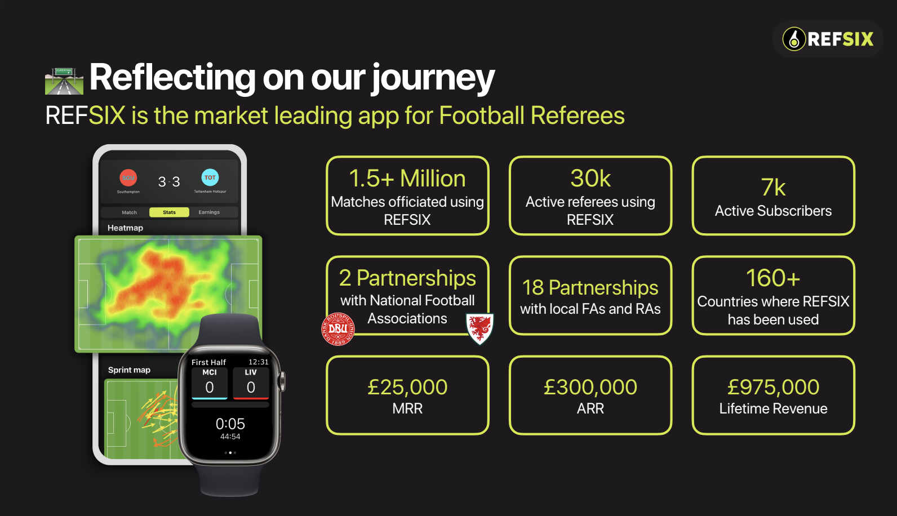

REFSIX had strong product-market fit and a profitable business model. But the referee market had a ceiling. This is the story of how we identified a 10x larger opportunity, designed a hardware-software strategy, and executed across two products simultaneously.

REFSIX is a smartwatch and mobile app helping football referees track performance metrics and improve their decision-making. When I joined as Head of Product in June 2024, the app had:
The strategic challenge was clear: the referee TAM was constrained. To achieve significant growth, we needed to expand into a larger market whilst leveraging our core expertise in sports performance tracking and personalisation.
We identified grassroots footballers as a 10x larger market opportunity:
Rather than fight for incremental growth in a constrained market, we chose to apply our domain expertise to a much larger opportunity whilst continuing to grow the core business.
We developed a dual-product strategy: continue optimising REFSIX as the cash engine, and launch Scorza as our primary growth vehicle — a B2C SaaS app with adaptive training plans for footballers.
A key insight from user research: football players couldn't use smartwatches during play and training because wearables fell off or got damaged. This was a blocker to mainstream adoption.
Solution: design a custom performance vest with integrated smartwatch mount, enabling:
This insight came directly from user conversations. Listening to players revealed constraints that others missed, and it guided our entire hardware design direction.
We structured execution around four pillars that guided product decisions across both REFSIX and Scorza:
Partnership-led growth. Assignr, Dutch FA, and State Associations drove a 120% spike in USA registrations.
Research-driven onboarding optimisation, improving activation from 48% to 57%.
Messaging-driven conversion. Changing "Subscribe Now" to "Download Free" drove 3.8% to 15.7% conversion (4x uplift).
Continuous feature iteration based on user feedback, maintaining engagement and reducing churn.
In 8 months, the dual-product strategy delivered measurable outcomes across the board:
Clear strategy meant the entire organisation understood the why, not just the what. We balanced growth ambition with unit economics discipline.
Always question whether your market is big enough. REFSIX had strong product-market fit but a limited growth ceiling. Recognising that constraint early let us plan for it rather than be surprised by it.
Leverage domain expertise to expand into adjacent markets. Our understanding of athletes and performance tracking applied directly to runners, reducing the learning curve significantly.
In crowded software markets, thoughtful hardware design creates defensibility and user experience advantages that competitors can't easily replicate.
Scorza launched with clear metrics for success: CAC, LTV, trial-to-paid conversion. We validated unit economics before committing to aggressive growth investment.
Next case study
Avalara: Transforming VAT Compliance